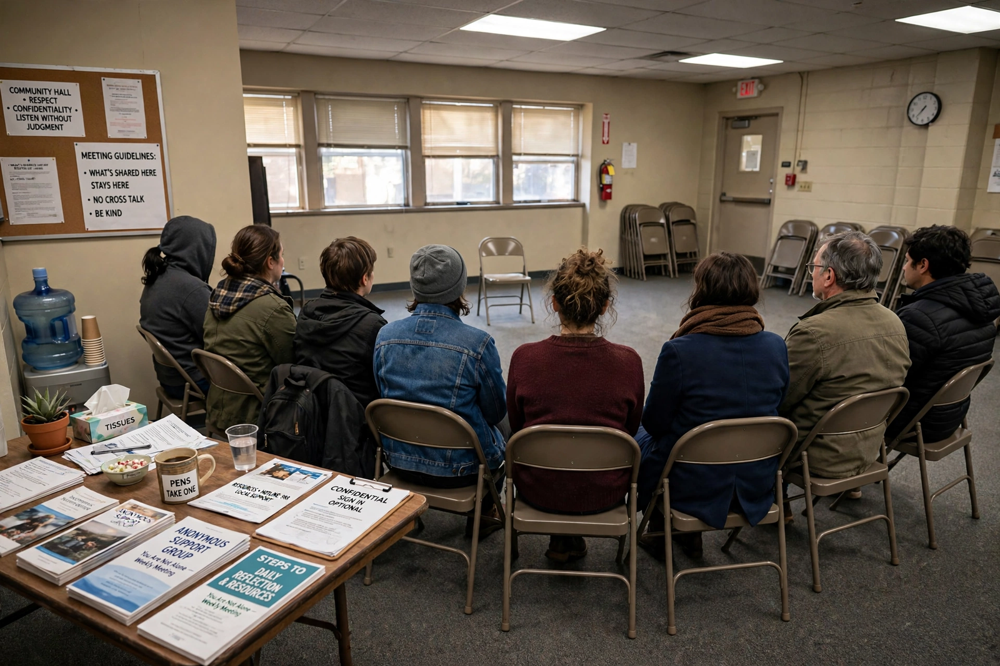

| Narcotics Anonymous | |
|---|---|
| Founded | 1953, Los Angeles, California, U.S. |
| Founder | Jimmy Kinnon and others |
| Type | Nonprofit, twelve-step fellowship |
| Focus | Recovery from drug addiction |
| Area served | Worldwide (~144 countries) |
| Method | Twelve Steps and Twelve Traditions adapted from AA |
Narcotics Anonymous (NA) is an international, community-based association of recovering drug addicts. Founded in 1953 in Los Angeles by Jimmy Kinnon and others, many of them members of Alcoholics Anonymous, it follows a twelve-step model adapted from AA but focuses on addiction itself rather than any particular substance. NA holds more than 70,000 weekly meetings in some 144 countries, making it the second-largest twelve-step fellowship after AA.

Short-lived groups for addicts using AA methods existed from the late 1940s (including a Lexington, Kentucky hospital group and an earlier New York "Narcotics Anonymous" in 1949), but the enduring fellowship dates to 1953, when Kinnon and fellow AA members in the San Fernando Valley obtained AA's permission to adapt its steps, changing references from alcohol to addiction and from "alcoholic" to "addict". Growth was slow until the publication of NA's Basic Text in 1983, largely written by Kinnon (who died in 1985), after which membership expanded worldwide.
NA describes addiction as a disease involving more than drug use, and abstinence from all drugs as the basis of recovery. Members work the Twelve Steps with a sponsor, attend meetings, and undertake service. The only requirement for membership is "a desire to stop using". NA is not allied with any religion, politics or institution, is self-supporting through member contributions, and maintains personal anonymity at the level of press and media. NA literature includes the Basic Text, It Works: How and Why and the daily meditation book Just for Today. It cooperates with treatment facilities and prisons through its Hospitals and Institutions service. See also Substance use disorder.